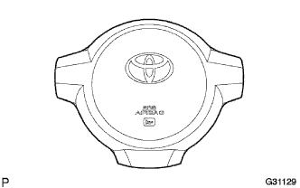

|
Vehicles that are not involved in the collision
If the following items are applicable, replace the horn button ASSY with a new one.
- standard
- There are cracks, dents, and chips on the surface and groove part of the horn button ASSY development surface
Vehicles that have collided but have not operated with air passage
- ■ Warning ■
- The replacement work of the horn button ASSY is performed in the correct procedure.
Remove the horn button ASSY, and replace the horn button ASSY with a new one if it falls under the following items.
- standard
- There are cracks, dents, chips, and other deformations on the patsudo surface and groove of the horn button ASSY
- Connectors and wire harness have scratches, cracks, and damage
- Horn button ASSY dropped
If the following items fall, replace the horn button ASSY and the steering wheel asser with a new one with a set.
- standard
- Horn button ASSY and steering wheel ASSY interference and difficult to install
- The gap between the horn button ASSY and the steering wheel ASSY is not constant
- The braketto part of the steering wheel ASSY is deformed
- ■ Attention ■
- If the braketto portion of the steering wheel ASSY is deformed, replace it with a new one without repairing it.
|  |
  |